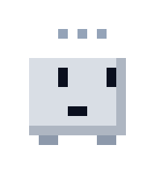
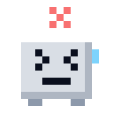

01 / plan
Split the task
The planner turns the request into a short, ordered plan. No edits yet.
open-source terminal coding agent
maxcode plans the task, makes the edits, and runs your tests before it says the work is finished. If the checks fail, the step is not done.
uvx --from git+https://github.com/RavaniRoshan/maxcode maxcode --helpRequires Python 3.12+, uv, git, and a maxcode-engine binary on your PATH. Bring your own model key.

the loop
Every step has a checkpoint and a check. The model does not grade its own homework.
01 / plan
The planner turns the request into a short, ordered plan. No edits yet.

02 / work
The worker changes files for a single step, inside your repo.
03 / verify
Tests, build, and lint run in a separate process. Output is kept in the log.

04 / done
A clean run closes the step. A failure retries from the checkpoint, then stops.
example run
Transcript is illustrative. Your project supplies the checks, so the commands and output will differ.
why a gate
The engine edits files and runs commands. A separate subprocess runs pytest, the build, or lint. A model cannot mark its own work as passing.
Each step starts from a git ref under refs/maxcode/. A failed attempt rolls back to that ref, not to a half-edited tree.
Every run records input and output tokens. Partial usage is reported as partial, never guessed. Set a dollar ceiling per task.
benchmark
The harness runs the same task suite with the verifier on and off. This page will publish a pass rate only next to its raw log.
| Run | Verifier | Pass rate | Raw log |
|---|---|---|---|
| maxcode v0.1 | on | not published | pending |
| maxcode v0.1 | off | not published | pending |
Run it yourself: maxcode bench --verifier on, then uv run python -m maxcode.bench.report .maxcode/bench.
open source
maxcode is an independent project. Point it at OpenRouter, Together, Groq, a local server, or any OpenAI-compatible endpoint. Keys stay in environment variables.